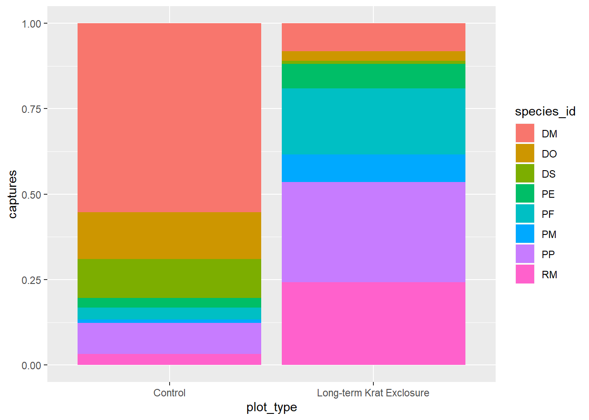
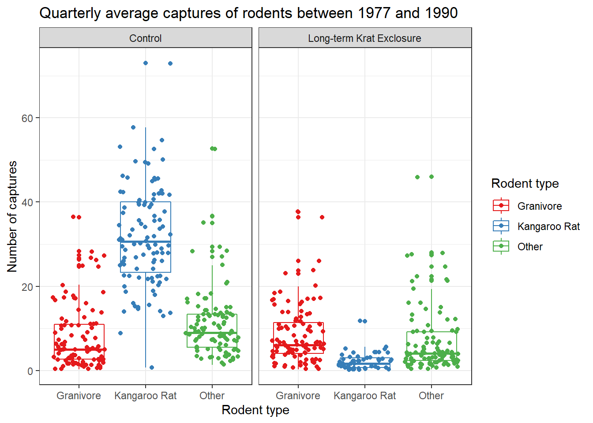

4 Visualisation and communication
Just as there are many types of data e.g. tables and audio files, correspondingly there are many types of data visualisation e.g. statistical plots and maps. Likewise visualisations we do for an exploration may be different to those we do for communication. Therefore we narrow the scope here to introduce some fundamentals of visualisation, presentations and reports.
By the end of this chapter you will be able to:
- Use the
ggplot2package to create exploratory plots and customize their plots- Use geometrical objects and aesthetic mappings to create box plots, bar plots and time series plots
- Use facets to split plots into sub-plots according to variables
- Transform plots using statistical mappings and categorical variables (factors).
- Transform data positions and coordinates
- Use
ggplot2themes and thescalespackage to customize plots- Export figures for use in documents and presentations
These skills will enable to start creating visualisations as well as reports and presentations using R, but importantly it is up to you to determine what sort of visualisation is appropriate for the task at hand and for you to use your critical judgement in assessing a visualisation, presentation or report.
4.1 Visualisation overview
For a deeper understanding of the art of data visualisation, a good place to start is with the work of Albert Cairo, a journalist and academic specialising in data visualisation who has written and continues to write extensively on the subject.
Betsy Mason has written an article that summarises many of the key ideas: Why scientists need to be better at data visualization including the issues around how we perceive shade and hue, that can make plots such as heatmaps problematic.
Rafeal Irizarry has also written about Why dynamite plots must die. These are very common plots in biomedical science, but are far from optimal.
The point here is not to tell you explicitly what plots to make, or that heatmaps are bad etc., but to encourage you to think about what type of plot is best for the task in hand. Choosing to plot your data in a certain way because, “that’s what everyone else does” is unlikely to be the best reason.
To begin with two questions one might immediately have are:
- Why visualise our data in the first place?
- What do we know about what makes an effective visualisation?
4.1.1 Making comparisons
Starting with the second question, a helpful set of principles for statistical visualisations is the work of Cleveland and McGill, namely: Graphical Perception: Theory, Experimentation, and Application to the Development of Graphical Methods by Cleveland and McGill.
What they established is a hierarchy of perception, that is to say we there is an order to which our brains find it easier or harder to make comparisons with visual information.
The order of comparisons from easiest to hardest is as follows, but this is best illustrated by some plotting some example data.
- Positions on a common scale
- Positions on the same but non-aligned scales
- Lengths
- Angles, slopes
- Area
- Volume, colour saturation
- Colour hue
Figure 4.1 illustrates plotting the same percentages for five Countries seven ways corresponding with Cleveland and McGill’s hierarchy.

Figure 4.1: The same percentages for five Countries A-E is plotted seven ways to illustrate the differences in ease of making comparisons depending the plot type. The percentages are A:32%, B:29%, C:34%, D:25% and E:22% in all plots.
The message here is that when choosing a visualisation for comparisons between sets of observations the best place to start is with plotting the observations on a common scale (but not necessarily finish).
4.2 ggplot2()
In his paper A layered grammar of graphics
Hadley Wickham discusses the theory behind the ggplot2() package. As with tidyverse
the aim was to create a consistent system for building plots.
The key components of a plot are:
- data with aesthetic mappings e.g. position on an axis, colour or size.
- geometric objects e.g. points, lines.
To this other components or layers can be added, such as facets or statistical transformations to make increasingly complex plots.
As ggplot2() was first released in 2007 it preceded the magrittr package in
2014 from which we get the pipe %>% it has one syntax difference that is sure
to catch you out. Whilst we can pipe into a ggplot() function, we build the plots using
the plus sign + to add our next layer.
Likewise, forgetting to use the aesthetic function aes() within a layer is a common
mistake I make. Aesthetics and geometries are related, so for example you can’t
set the shape aesthetic of a line. I usually make this mistake with colour and fill
aesthetics, where I try to use one when I need the other.
The basic form for creating plots with the ggplot2 package is as follows:
To recap:
- We provide a data frame as an argument to the
ggplot()function- Variables in the data frame are mapped to visual properties using the aesthetics function
aes()- The aesthetics are mapped to a geometric object such as points using a layer with a
geom()function.- If we were to plot several
geoms()on the same plot wanted to map the same aesthetics to eachgeom()we can pass the aesthetics argument toggplot()directly:ggplot(data = <DATA>,mapping = aes(<MAPPINGS>)).- We can also pipe data into
ggplot()as we would for other functions.
4.2.1 Datasaurus dozen
Returning to the first question: Why visualise data in the first place?
Inspired by the Anscombe’s Quartet and Albert Cairo’s Datasaurus, Justin Matejka and George Fitzmaurice created the Datasaurus dozen to illustrate a problem with relying only on summary statistics to understand data.
# Download the Datasaurus Dozen
datasaurus <- read_tsv("https://raw.githubusercontent.com/ab604/coding-together/master/exercises/DatasaurusDozen.tsv")## Parsed with column specification:
## cols(
## dataset = col_character(),
## x = col_double(),
## y = col_double()
## )## Observations: 1,846
## Variables: 3
## $ dataset <chr> "dino", "dino", "dino", "dino", "dino", "dino", "dino", "dino…
## $ x <dbl> 55.3846, 51.5385, 46.1538, 42.8205, 40.7692, 38.7179, 35.6410…
## $ y <dbl> 97.1795, 96.0256, 94.4872, 91.4103, 88.3333, 84.8718, 79.8718…## # A tibble: 13 x 1
## dataset
## <chr>
## 1 dino
## 2 away
## 3 h_lines
## 4 v_lines
## 5 x_shape
## 6 star
## 7 high_lines
## 8 dots
## 9 circle
## 10 bullseye
## 11 slant_up
## 12 slant_down
## 13 wide_linesWe have a bakers’ dozen of datasets, each with 1,846 observations for
variables x and y. Let’s look at the mean and standard deviation for each
variable using a grouped summary and the mean() and standard deviation sd() functions.
datasaurus %>% group_by(dataset) %>% summarise(mean_x = mean(x),
mean_y = mean(y),
sd_x = sd(x),
sd_y = sd(y))## # A tibble: 13 x 5
## dataset mean_x mean_y sd_x sd_y
## <chr> <dbl> <dbl> <dbl> <dbl>
## 1 away 54.3 47.8 16.8 26.9
## 2 bullseye 54.3 47.8 16.8 26.9
## 3 circle 54.3 47.8 16.8 26.9
## 4 dino 54.3 47.8 16.8 26.9
## 5 dots 54.3 47.8 16.8 26.9
## 6 h_lines 54.3 47.8 16.8 26.9
## 7 high_lines 54.3 47.8 16.8 26.9
## 8 slant_down 54.3 47.8 16.8 26.9
## 9 slant_up 54.3 47.8 16.8 26.9
## 10 star 54.3 47.8 16.8 26.9
## 11 v_lines 54.3 47.8 16.8 26.9
## 12 wide_lines 54.3 47.8 16.8 26.9
## 13 x_shape 54.3 47.8 16.8 26.9Here we use the basic form to plot the datasaurus but with the addition of facet_wrap()
in which the first argument is ~ representing “formula” (a type of data structure) and the
second argument is the variable we wish to create individual plots for.
In words read this as “facets depend upon the dataset”:

The message here is that plotting the data reveals structure that is not apparent from summary statistics. Therefore if possible: plot early, and plot often.
4.2.2 Exploratory plots
As the name implies, the point of an exploratory plot is to explore our data. This can happen before, during or after tidying/transforming data, and as discussed in The Art of Data Science serves two key purposes that we saw with the Datasaurus:
- Creating expectations
- Checking for deviations from our expectations.
In Chapter 2 having transformed the Portal rodent surveys data into a table summarising the rodent observations per three month period per plot type (control or exclosure). The original paper was exploring the hypothesis that kangaroo rat and granivore populations were in competition for resources in their habitat.
We plotted the average number of captures over time as a line and point plot, coloured according to plot type, and facetting the plot according to animal type.
Here we are exploring the effect of the exlosure on the animal populations over time, and the variation in populations over time in both plot types.
ggplot(data = by_quarter,
mapping = aes(x=quarter,y=mean_captures,colour=plot_type)) +
geom_line() +
geom_point() +
facet_wrap(~ rodent_type)Figure 4.2: The average number of captures over time as a line and point plot, coloured according to plot type, and facetting the plot according to animal type.
Expectations created by this plot for example are that the populations fluctuate quite a lot over time, and the exclosure appears to work well with few kangaroo rats observed in those plots.
What is less clear is what the effect of the exclosure is having, if any, on the granivore population, suggesting we might wish to try a different type of plot.
4.2.3 Statistical transformations
Often we want to transform the data as part of the plotting process, for example to create plots that reveal statistical information such as distributions or averages. For these we can use geoms which are statistical in nature or to which we provide statistical arguments.
4.2.3.1 Barplots
These simple plots actually reveal subtleties in
plots. In the following code we take the by_month_species subset and create
a bar chart of species_id, filling the bars with colour according to rodent_type.
# Create a bar plot of genus from by_month_species
by_month_species <- surveys_subset %>%
filter(rodent_type != "Other") %>%
group_by(year,month,species_id,rodent_type,plot_type) %>%
summarise(captures = n()/31)
by_month_species %>%
ggplot() +
geom_bar(mapping = aes(x = species_id, fill=rodent_type)) +
facet_wrap(~ plot_type)We see that the code has automatically created a count variable on the y-axis for each species_id plotted as a bar on the x-axis.
This is because the geom_bar() algorithm automatically performs a statistical
transformation of the mapped variable. That is to say it performs a count and
bins the data according to the genus. This means we have a chart where the bar
height corresponds to the number of rows for each species_id.
But this isn’t a count of the captures, it’s how many rows each species_id appears
in of by_month_species. Remember how we summarised this data to calculate captures per month.
Often when people talk about bar charts they are referring to when the height
of the bar is a variable present in the data, here that would be the captures
column.
In this kind of situation we need to map the y-axis too, and change the
default geom_bar() statistical transformation to stat = "identity" so that
it takes the values provided in the captures column to determine the height of
the bar.
To reiterate: if you are trying to create a bar chart using x and y variables
contained in your data set, you need to set geom_bar(stat = "identity").
# Create a bar plot of genus from by_month_species using y = captures and
# stat = "identity"
by_month_species %>%
ggplot() +
geom_bar(mapping = aes(x = species_id, y = captures, fill=rodent_type), stat = "identity") +
facet_wrap(~ plot_type) Let’s check this by looking at PE in the control plots and counting the rows and comparing that
to summing the number of captures. Note we need to ungroup() before doing another
summary. There are 132 rows, but only 11 captures.
# How many rows for PE
by_month_species %>%
filter(species_id == "PE", plot_type == "Control") %>% ungroup() %>% tally()## # A tibble: 1 x 1
## n
## <int>
## 1 132# How many captures for PE
by_month_species %>%
filter(species_id == "PE", plot_type == "Control") %>% ungroup() %>%
summarise(total = sum(captures))## # A tibble: 1 x 1
## total
## <dbl>
## 1 11.14.2.3.2 Boxplots
The previous exploratory plot showed us changes with time, but averages and spread or other statistical summaries of the surveys data might be more informative for understanding the effect of exlosure on granivore populations.
Box-plots are a standard way to plot the distribution of a data set. Plotting the data this way means that we drop the dynamic information, the time dimension, but gain a compact summarised view of the variability of the number of captures, and hopefully evidence of any changes in granivore population following exclosure.
In the following code we use the boxplot() geom, and this time swap the mapping
such that colour maps to the rodent type, and plots are faceted according to the plot type.
ggplot(data= by_quarter,
mapping = aes(x = rodent_type,
y = mean_captures,
colour = rodent_type)) +
geom_boxplot() +
facet_wrap(~ plot_type)Comparing the median bar and the interquartile range, we can see evidence suggesting a modest increase in the granivore population when kangaroo rats are excluded.
4.2.4 Position adjustments
Another common adjustment we might make to our plots is to adjust the position of the data.
Recall the mpg data set for cars and our plot showing the fuel efficiency
versus the size of the engine. Many of the points are actually over plotted
such that we can’t see them.
By adding a bit of random noise to the position each data point, called jitter
we can spread the points out and see them more clearly. This is seen in the
second plot below, where the position = "jitter" argument has been provided
to the geom_point() function.
It’s a little counter intuitive to add noise to a plot, but when we’re trying to explore data for patterns it can be very useful.

# With jitter
ggplot(data = mpg) +
geom_point(mapping = aes(x = displ, y = hwy, colour = class),
position = "jitter")
Let’s add points to our box-plot and try comparing the plot to one where the points are jittered.
# Boxplot with points and jitter
ggplot(data= by_quarter,
mapping = aes(x = rodent_type, y = mean_captures,
colour = rodent_type)) +
geom_boxplot() +
geom_point(position = "jitter", alpha = 0.5) +
facet_wrap(~ plot_type)
We can also apply positional adjustments to other plots such as barplots.
We can combine aesthetic fill = species_id with position = "fill" in
geom_bar() to create a separate bar for each species and put plot_type on
the x axis for by_month_species plots bars of length 1, but filled
with the proportion of captures for that species.
# Create a bar plot of genus from by_month_species using x = plot_id and
# stat = "identity"
by_month_species %>%
ggplot() +
geom_bar(mapping = aes(x = plot_type, y = captures, fill=species_id),
position = "fill" , stat = "identity") 
Perhaps not that useful given what we know about making comparisons.
For more positional adjustments, check out the help files ?postion_jitter,
?position_dodge, ?position_fill, ?position_identity, and
?position_stack.
4.2.5 Coordinate adjustments
Previously, we plotted by_month_species and sometimes it’s tricky when there are
lots of labels on the x-axis, so let’s flip the plot round using coord_flip() to improve things:
# Flip the coordinates to make the labels more readable
ggplot(by_month_species) +
geom_bar(mapping = aes(x = species_id, y = captures, fill = rodent_type),
stat = "identity") +
facet_grid(~ plot_type) +
coord_flip()4.2.5.1 Factors
Finally for this plot, it would be nice to put the bars in order of size. We can do this by converting the genus to a factor.
Recall that factors are how R represents categorical variables, variables with a limited number of values, such as genus.
Also recall factors look like strings, but behave like integers. That is to say they are strings of characters with associated values called levels that can be used to order catergories.
This is why factors are useful, especially when we want to place things in non-alphabetical order. We can take advantage of factor levels to order things as we wish.
Check out the forcats tidyverse package to
explore the power of factors, but here to give you a taste of what is possible
we’re going to use the forcats package fct_reorder() function to convert
species_id into a factor and in doing so set the level according to to the number
of captures. In this way we can order the bars in our plot according to the
number of captures and see the pattern more clearly.
In fct_reorder(), the first argument is the variable we wish to make into a
factor species_id, and the second argument is variable we wish to use to create
the order. Here we want to order according to the number of captures,
so captures is the second argument.
Note we still keep x and y mappings, but now x is now a function of both the genus and the capture columns.
This gives us a nice ordered bar chart by genus and number of captures during the experimental period.
We can clearly see that kangaroo rat exclosure works, and that this corresponds with an increase in granivore captures these plots.
# Load the forcats tidyverse package
library(forcats)
# Order the rodents according to number of captures
ggplot(by_month_species) +
geom_bar(mapping = aes(x = fct_reorder(species_id, captures), y = captures,
fill = rodent_type), stat = "identity") +
facet_grid(~ plot_type) +
coord_flip()
4.3 Themes and customisations
When we’re exploring our data we generally don’t mind if the labels and colours etc… are a bit messy. But when we want to publish or communicate our findings to others we want everything to be just so.
This is where the code can become quite complicated and it’s hard to provide a general case. However, the underlying template remains the same:
ggplot(data = <DATA>) +
<GEOM_FUNCTION>(
mapping = aes(<MAPPINGS>),
stat = <STAT>,
position = <POSITION>
) +
<COORDINATE_FUNCTION> +
<FACET_FUNCTION>It’s unlikely that you’ll need to statistical transformations, positional adjustments, coordinate adjustments, and facets all in the same plot, but this provides an idea of what is possible. Remember the aim is clarity, not to make something complicated just because you can.
This template we can use to add all the additional functions and arguments that will change the plot to make it exactly how we want. It takes time, but remember code is reusable. Solve it once and you’ve solved it forever.
For all the possible customisations check out the ggplot2 documentation, and this chapter of R for data science: Graphics for communication
But here’s a few common changes.
4.3.1 Changing colours, labels, themes and adding titles
Recall our box-plot with points overlaid. Following the facet function,
we’re going add a succession of functions to change the colours
scale_colour_brewer(), change the axis labels,
add a title using labs() and change the theme.
Themes deal with non-data elements e.g. the grid, the axes etc. There are
a range of built-in themes and packages of themes such as ggthemes. Here
we’ll use the built-in theme, theme_bw() that gives a simple layout.
ggplot(data= by_quarter,
mapping = aes(x = rodent_type, y = mean_captures,
colour = rodent_type)) +
geom_boxplot() +
geom_point(position = "jitter") +
facet_wrap(~ plot_type) +
scale_colour_brewer(palette = "Set1") +
labs(title = "Quarterly average captures of rodents between 1977 and 1990",
x = "Rodent type",
y = "Number of captures",
colour = "Rodent type") +
theme_bw()
Check out ?scale_colour_brewer and ?scale_fill_brewer for more information
on colour schemes for discrete data. And ?scale_color_continuous for creating colour gradients for continuous data.